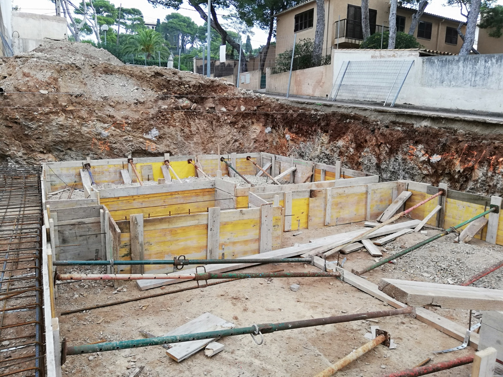

La empresa
Experiencia de obra. Gestión directa. Responsabilidad.
Una estructura de trabajo cercana al cliente, pero preparada para ejecutar reformas integrales, rehabilitaciones y obras de entidad.
Dirección de obra
Más de dos décadas resolviendo obra real.
La experiencia acumulada permite anticipar problemas habituales de una reforma en Mallorca: humedades, soportes antiguos, fisuración, incompatibilidad entre materiales, encuentros deficientes y trabajos que exigen coordinación entre varios oficios.
Cuando una solución lo requiere, se trabaja con apoyo técnico especializado y prescripciones de fabricantes para definir sistemas adecuados antes de ejecutar.
La prioridad es una solución durable y técnicamente coherente, no simplemente la opción más barata.

“El acabado importa. Pero primero tiene que estar bien resuelto lo que queda detrás.”